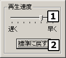
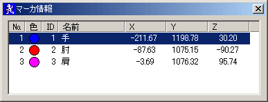
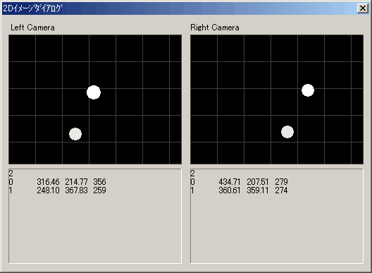

| その他ダイアログ |
|
|
再生速度設定ダイアログ
|
|

再生速度を設定します。ここで行った変更は、すぐにメイン画面の表示に反映されます。
ウィンドウの外側に近い部分（”再生速度”のフレームの外側）をドラッグ＆ドロップすることでウィンドウの位置を変更できます。
ウィンドウ以外の場所をクリックすればダイアログは閉じます。
速度を８段階で変更します。
再生速度を標準（３０フレーム／秒）に戻します。
|
マーカ情報表示ダイアログ
|
|

マーカに関する情報をリスト形式で表示します。
「３Ｄ Ｍｏｔｉｏｎ Ｔｒａｃｋｅｒ」で設定した内容がそのまま反映されます。 現在表示しているフレームのＸＹＺ座標を表示します。
|
２Ｄイメージダイアログ
|
|

キャプチャ時に２台のカメラが捕らえた映像を再合成して表示します。カメラからの情報を元に輝度の高いエリアを円で再合成しており、現画像とは異なります。
キャプチャ時の設定によっては、この情報は表示されない場合があります。
|
|
Copyright (C) 2001 CyVerse
Corp.
|